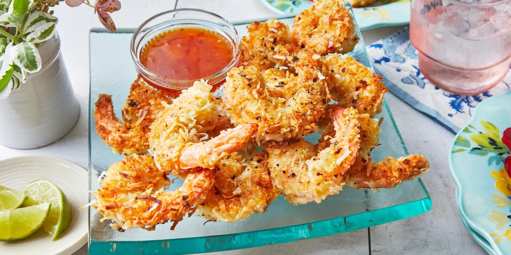

COCONUT SHRIMP

DESCRIPTION
These coconut shrimp are rolled in a coconut beer batter before frying.
Serve warm with your favorite dipping sauce.
Use orange marmalade, mustard, and horseradish mixed to taste for a dipping sauce.
INGREDIENT
- You'll need all-purpose flour, an egg, beer, and baking powder for the beer batter.
- you need to make sure your shrimp is peeled and deveined
- Make sure to use unsweetened coconut flakes.
- Use a cooking oil with a high smoke point, such as peanut oil or vegetable oil.
STEPS
- Whisk some of the flour, the egg, beer, and baking powder together.
- Dredge the shrimp in flour, dip it in the beer batter, and roll in the coconut flakes.
- Refrigerate the shrimp for half an hour, then fry the shrimp in hot oil until golden brown.